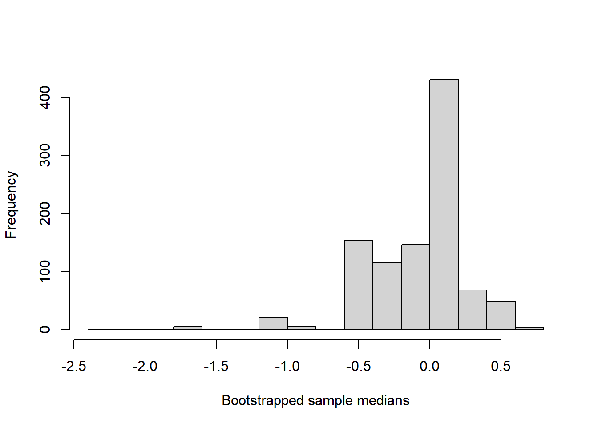
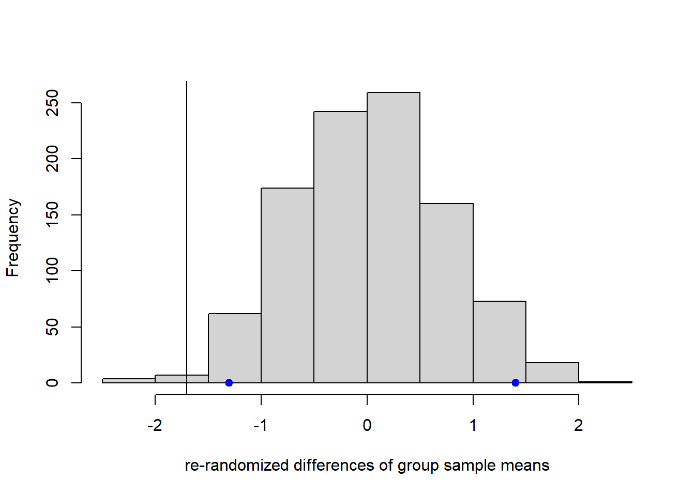

Chapter 3 Review of Statistical Inference
In this section we briefly review methods for constructing hypothesis tests. To keep things fairly simple, consider measuring one variable and suppose we obtain a simple random sample of such measurements/observations, denoted \(x_1, \ldots, x_n\). We’ll refer to the random variable versions (yet to be observed versions) of such observations by \(X_1, \ldots, X_n\), per usual.
First we discuss the pivotal method for statistical inference, including approximate and asymptotic pivots. Next we’ll briefly describe the bootstrap method, which, unlike the pivotal method, does not require a full sampling model of the data. Finally, we consider so-called “randomization tests” which are not exactly hypothesis tests, but provide a means for assessing whether interventions or observed differences are associated with significant response differences in both experiments and observational studies.
In terms of setup, suppose \(X^n := (X_1, \ldots, X_n)\) is a random sample of size \(n\) from a population equivalent to a probability distribution \(P\), and that we are interested in making inferences about a parameter \(\theta = \theta(P)\), a functional of \(P\). We’ll consider special cases below. Also, for now we will consider only a “point null” hypothesis, \(H_0: \theta = \theta_0\) versus \(H_a:\theta \ne \theta_0\) where \(\theta_0\) is a singleton.
3.1 Pivotal Inference
Suppose \(H_0:\theta = \theta_0\). A pivot with respect to \(H_0\) is a function, say, \(g\), of data and parameter with a distribution \(F\) under \(H_0\) depending on no unknown parameters. We can write this relationship as \[g(X_1, \ldots, X_n;\theta_0)\stackrel{H_0}\sim F.\]
You are likely familiar with several examples of pivots. If \(X^n\) is a random sample from a normal distribution with mean \(\mu\) and variance \(\sigma^2\), i.e., \(X_i\stackrel{iid}{\sim}N(\mu, \sigma^2), \,i=1,\ldots, n\), then \[g(X^n;\mu):=\frac{\overline X - \mu}{\sqrt{S^2/n}}\stackrel{d}{=}t_{n-1}\] where \(S^2\) is the sample variance of \(X^n\) and \(t_{n-1}\) is a Student’s \(t\) random variable with \(n-1\) degrees of freedom.
A pivot for a point-null hypothesis admits a level-\(\alpha\) test by the following general rule: \[\text{Reject }H_0\text{ if }g(x^n;\theta_0)\notin(U_{\alpha/2}, \, U_{1-\alpha/2})\] where \(U\sim F\) and \(U_\alpha\) denotes the \(\alpha\) quantile of \(U\). The logic is as follows: if \(g(x^n;\theta_0)\notin(U_{\alpha/2}, \, U_{1-\alpha/2})\) then either \(g(x^n;\theta_0)\) is an unlikely realization of \(g(X^n;\theta_0)\) or \(H_0\) is false. Concluding \(H_0\) false in such an event is erroneous with probability \[P_{H_0}(g(X^n;\theta_0)\leq U_{\alpha/2}) + P_{H_0}(g(X^n;\theta_0)\geq U_{1-\alpha/2}) = \alpha/2 + \alpha/2 = \alpha\] by design. In the case of the normal random sample and point-null regarding \(\mu\) the general rule gives way to the one-sample t-test \[\text{Reject }H_0\text{ if }\frac{\overline X - \mu}{\sqrt{S^2/n}}\notin(t_{n-1, \alpha/2}, \, t_{n-1, 1-\alpha/2})\]
Pivot-based tests for point nulls have a one-to-one correspondence with confidence intervals. Given data \(X^n = x^n\) define the confidence set \(C_{\alpha}(x^n):=\{\theta: g(x^n;\theta)\in(U_{\alpha/2}, \, U_{1-\alpha/2})\}\). The coverage probability of \(C_\alpha(x^n)\) is equal to
\[P_{\theta_0}(\theta_0 \in C_\alpha(X^n))\]
where \(\theta_0\) is the true parameter value, i.e., in a point-null hypothesis test it is the null value and \(P_{\theta_0}\) means the same as \(P_{H_0}\).
\[\begin{align*}
P_{\theta_0}(\theta_0 \in C_\alpha(X^n)) &= 1-P_{\theta_0}(\theta_0 \notin C_\alpha(X^n))\\
& = P_{\theta_0}(g(X^n;\theta_0)\notin(U_{\alpha/2}, \, U_{1-\alpha/2}))\\
& = 1-\alpha.
\end{align*}\]
Therefore, the confidence set given above (which is usually an interval) has the confidence property
\[P_{\theta_0}(\theta_0 \in C_\alpha(X^n))\geq 1-\alpha.\]
Therefore, level-\(\alpha\) tests of point null hypotheses enjoy a one-to-one correspondence with valid/exact confidence sets (these being adjectives to describe sets with the confidence property).
3.2 Approximate Pivots
Introductory statistics courses often give students the impression pivots are common, and available in most problems. Rather, pivots are the exception, and pivot-based tests, for a variety of reasons, are simply the only tests covered in such courses. An early exception to the perceived rule is the two-sample t-test when population variances are unequal. Let’s briefly entertain this slightly more complicated example involving two populations and two random samples, \(X^n\) and \(Y^m\) where \(X_i\stackrel{iid}{\sim}N(\mu_x, \sigma_x^2)\) and \(Y_j\stackrel{iid}{\sim}N(\mu_y, \sigma_y^2)\). As always, we want to test \(H_0:\mu_x-\mu_y = 0\), and a near-pivot is the expression \[\frac{\overline X - \overline Y}{\sqrt{S_x^2/n + S_y^2/m}}.\] We can rewrite this as \[\frac{\overline X - \overline Y}{\sqrt{\sigma_x^2/n + \sigma_y^2/m}} \times \left[\frac{\sqrt{S_x^2/n + S_y^2/m}}{\sqrt{\sigma_x^2/n + \sigma_y^2/m}}\right]^{-1}.\] Under \(H_0\), \(\frac{\overline X - \overline Y}{\sqrt{\sigma_x^2/n + \sigma_y^2/m}}\) has a standard normal distribution and \(S_x^2/n + S_y^2/m\) is equal in distribution to \(\sigma_x^2 V_{n-1} /[n(n-1)] + \sigma_y^2 U_{m-1} /[m(m-1)]\) where \(V_{n-1}\) and \(U_{m-1}\) are independent \(\chi^2\) r.v.’s with \(n-1\) and \(m-1\) degrees of freedom, respectively. The problem is that the denominator term in brackets is not equal in distribution to the square root of a \(\chi^2\) r.v. divided by its degrees of freedom. To get around this inconvenience, Satterthwaite suggested the following: find a \(\chi^2\) random variable \(R\) such that \[\left[\frac{\sigma_x^2 V}{n(n-1)} + \frac{\sigma_y^2 U}{m(m-1)}\right]\cdot \left[\frac{\sigma_x^2}{n} + \frac{\sigma_y^2}{m}\right]^{-1}\stackrel{d}{\approx} R.\] Satterthwaite’s strategy for finding \(R\) was to choose the degrees of freedom of \(R\), denote \(\nu\) such that the mean of \(R\) and the variance of \(R\) match the mean and variance of the above expression. Let this degrees of freedom be \(\nu\) and note: \[\nu = \left(\frac{s_x^2}{n} + \frac{s_y^2}{m}\right)^2\left[\frac{s_x^4}{n^2(n-1)}+\frac{s_y^4}{m^2(m-1)}\right]^{-1}.\] Then, Sattethwaite showed \[\frac{\overline X - \overline Y}{\sqrt{S_x^2/n + S_y^2/m}}\stackrel{d}{\approx} R_\nu,\] which is the approximate pivot used in the two-sample t-test when the variances are not assumed equal.
It is often the case that tests based on approximate pivots are not level-\(\alpha\) tests, but depending on the case some, like the two-sample t-test, perform very well with respect to nominal Type 1 error. Just to be clear, we’ll define an approximate pivot as a function of statistics and parameters approximated by a known distribution: \[g(X^n; \theta_0)\stackrel{\cdot}{\sim} F, \quad \text{under }H_0\] where the dot above the tilde denotes “approximately follows distribution function \(F\)”. A special case of an approximate pivot is one whose approximation improves as the sample size \(n\) increases—we call these asymptotic pivots as we discuss next.
3.3 Asymptotic Pivots and Likelihood-based Tests
Define an asymptotic pivot as follows: \[g(X^n; \theta_0)\stackrel{d}{\rightarrow} F, \quad \text{under }H_0, \, \text{as }n\rightarrow\infty.\] This simply says that the distribution function of \(g(X^n; \theta_0)\) converges to \(F\) as \(n\rightarrow \infty\) when \(H_0\) is true. For “large” \(n\) we would expect a test based on this asymptotic pivot to be nearly a level-\(\alpha\) test—but sometimes it may be difficult to determine what values of \(n\) are sufficiently large for this good behavior to “kick in”.
Here’s an asymptotic-pivot based test you’ve hear of: consider the one-sample t-test that rejects \(H_0:\mu = \mu_0\) when \((\overline x - \mu_0)/\sqrt{s^n/n} \notin (t_{n-1,\alpha/2}, t_{n-1,1-\alpha/2})\). Now, replace the Student’s \(t\) quantiles with standard normal quantiles. Since \(t_{n-1}\stackrel{d}{\rightarrow}N(0,1)\) as \(n\rightarrow \infty\), the “z-test” is approximately a level-\(\alpha\) test for “large” \(n\), usually \(n>50\) is plenty.
Fortunately, there is a powerful way to derive asymptotic pivots in a wide variety of situations using maximum likelihood. For review, recall the likelihood function for a random sample is \[L(\theta;x^n) = \prod_{i=1}^n f(x_i;\theta)\] where \(f(x;\theta)\) denotes the density of \(X\). The loglikelihood is simply \(\ell(\theta;x^n) = \log(L(\theta;x^n))\) where log always denotes the natural log. The maximum likelihood estimator \(\hat\theta_{mle}\) is the (usually unique) value \(\hat\theta_{mle} = \arg\min \ell(\theta;x^n)\). Also, recall the Fisher information (for one sample) is given by \(I(\theta) = -E(\frac{\partial^2}{\partial\theta^2}\ell(\theta;X^n))\). Then, the following is an asymptotic pivot: \[n^{1/2}\sqrt{I(\hat\theta_{mle})}(\hat\theta_{mle} - \theta_0)\stackrel{d}{\rightarrow}N(0,1).\] Tests based on such a pivot are called asymptotic Wald tests. There are other ways of constructing likelihood-based tests, such as likelihood ratio tests and score-based tests. But, we will not discuss those here.
3.4 Bootstrap-based Tests
The bootstrap (and related jackknife) are a collection of techniques for statistical inference that (usually) do not require one to specify the sampling distribution of the data. For example, consider inference on the population median, \(\theta\). Regardless of \(P\), the median satisfies \(\theta = \theta(P) = \text{argsolve}\left\{0.5=\int_{-\infty}^\theta dP\right\}\). The median always exists, independently of the sampling distribution \(P\); so, the concept of inference on \(\theta\) is sensible whether anything about \(P\) is known or not. Should we choose some particular form of \(P\), say, normal, when in fact \(P\) is not normal, then we are likely to make poor (biased) inferences regarding \(\theta\). It behooves us not to misspecify \(P\). But, then we need statistical inference techniques that do not require specifying \(P\). Enter the bootstrap.
The bootstrap typically centers around a point estimator. Carrying on the median example, let \(\hat\theta\) denote the sample median with respect to \(x^n\). The bootstrap instructs us to generate resamples of \(x^n\) by sampling from \(x^n\) with replacement, \(n\) times, and repeat this process \(B\) times, generating the bootstrapped data sets \(x^{n,1}, x^{n,2}, \ldots, x^{n,B}\). An illustration of this is given below for \(n=10\) and \(B = 5\); typically, \(B\) is very large.
x <- rnorm(10)
print('original data')## [1] "original data"print(sort(round(x,2)))## [1] -1.09 -1.07 -0.10 0.26 0.26 0.35 0.75 1.20 1.33 1.42print('bootstrapped data sets')## [1] "bootstrapped data sets"for(i in 1:5){
y = sample(round(x,2),10,replace = TRUE)
print(sort(y))
}## [1] -1.09 -1.07 -1.07 -1.07 -0.10 -0.10 0.26 0.75 1.20 1.42
## [1] -0.10 -0.10 -0.10 -0.10 -0.10 -0.10 0.75 1.20 1.20 1.42
## [1] -0.10 -0.10 -0.10 0.26 0.26 0.35 0.35 1.20 1.33 1.42
## [1] -1.09 -1.07 0.26 0.26 0.26 0.75 1.20 1.20 1.33 1.33
## [1] -1.09 -1.09 -1.09 -1.09 -0.10 0.26 0.26 0.35 1.20 1.33For each bootstrapped data set, we compute its corresponding point estimator, in this case the sample median, and call it \(\hat\theta^b\) for \(b = 1, \ldots, B\). These represent a sample of size \(B\) from the bootstrap sampling distribution of the point estimator. For large \(n\) and \(B\), and under certain other conditions, the bootstrap sampling distribution of \(\hat\theta\) is a very good approximation of the true sampling distribution of \(\hat\theta\), which is unknown because \(P\) is unknown. See a histogram of \(1000\) bootstrapped sample medians based on an original sample of \(n=10\) from a standard normal population.
library(boot)
x <- rnorm(10)
fun = function(data, i){
return(median(data[i]))
}
booted.medians <- boot(data = x, statistic = fun, R = 1000, stype = 'i')
hist(booted.medians$t, xlab = 'Bootstrapped sample medians', main = '')
Given the bootstrap sampling distribution of \(\hat\theta\), sall it \(\hat F\), there are many ways to proceed with inference on \(\theta\). The most straightforward method is to treat the extreme quantiles of \(\hat F\) as implausible values of \(\theta\). Let \(\hat\theta_\alpha\) denote the \(\alpha\) quantile of the bootstrap sampling distribution of \(\hat\theta\). Then, \((\hat\theta_{\alpha/2}, \,\hat\theta_{1-\alpha/2})\) constitutes an approximate \(95\%\) bootstrap CI for \(\theta\), and, similarly, the complement of that set is a rejection region for the point null \(H_0:\theta = \theta_0\). These quantiles are estimated by the corresponding sample quantiles of the \(\hat\theta^b\) values. This is called the percentile bootstrap method. For various reason we will not discuss here, a different method is usually preferred for deriving bootstrap CIs and tests. Let \(\hat\theta_\alpha\) denote the \(\alpha\) quantile of the bootstrap sampling distribution of \(\hat\theta\). Let \(\overline \theta\) denote the bootstrap sample mean \(B^{-1}\sum_{b=1}^B \hat\theta^b\). Then, \((2\overline \theta - \hat\theta_{1-\alpha/2}, \,2\overline \theta - \hat\theta_{\alpha/2})\) is the so-called basic bootstrap CI for \(\theta\). Again, its complement set may be used as a rejection region for a point null.
Many other bootstrap techniques are available for different resampling schemes, different constructions of intervals and tests, and different assumptions regarding the sampling distribution. The basic message to keep in mind is that the bootstrap is a general-purpose method with wide applicability, like mle, but for use when the sampling distribution is totally unknown.
3.5 Randomization and Permutation Tests
We finish our general discussion of constructing tests and confidence intervals with randomization tests, which is a bit of a misnomer. In fact, these are not really tests at all. As defined above, tests concern evaluating statements about the population, which involves generalizing from the sample to the population. Randomization tests attempt to evaluate whether an intervention or observed characteristic is responsible for observed differences in responses within the observed data set. The following illustration helps to clarify the difference between hypothesis tests and randomization tests.
Suppose \(x^n\) is an observed random sample from a population. Let \(y^n \in \{0,1\}^n\) denote a binary grouping variable identifying the observations in \(x^n\) with one of two groups. For a concrete example, we can think of \(y^n\) indicating a randomized treatment with one of two drugs, and \(x^n\) recording an outcome, like reduction in blood pressure after treatment for patients with high blood pressure. A hypothesis about the population may claim something like “there is no difference in average reduction in blood pressure between the two drugs at the population level”. Of course, this data set would be relevant for evaluating such a hypothesis. A subtly different claim is the following: “the observed difference in mean blood pressure reduction is not attributable to which treatment/drug was received”. The latter is a claim only about the observed treatment effects, and not the population-level effects. A randomization test is used to evaluate this second type of claim.
To perform a randomization test, one simply permutes the values in \(y^n\)—which, if the claim is true, is simply equivalent to the randomization of patients into the two treatment groups having come out differently than observed—and re-compute the difference of sample means. Of course, now we have jumbled up the responses of patients in the two treatment groups, but that’s the point. The claim is that the effects of the two treatments are indistinguishable, and so it shouldn’t matter if we re-label/re-randomize the patients. If we repeat these two steps many, many times (similar to the bootstrap) we obtain a randomization distribution or permutation distribution of the difference of sample means. To evaluate the claim, similar to the bootstrap, we simply look at the extreme quantiles of this distribution and see if they contain the observed difference in sample means. If so, then the observed difference is a value typical of the distribution that we realized under the assumption that the treatment labels were exchangeable, and, hence, the claim of no difference is reasonable. On the other hand, if the observed difference in means is outside the randomization distribution, then it is implausible that the treatment labels are not associated with the observed difference. The example below shows the randomization difference as well as the observed difference for randomly generated data sets of size ten from two normal distributions, \(N(0,1)\) and \(N(1,2)\). The blue points show the middle \(95\%\) of re-randomized differences of sample means and the vertical line shows the observed difference.
set.seed(12345)
x <- rnorm(10)
y <- rnorm(10,1,2)
z <- mean(x) - mean(y)
rerandomize <- function(B){
data <- c(x,y)
zs <- rep(NA,B)
for(i in 1:B){
indices <- sample(1:20, 10, replace = FALSE)
new.x <- data[indices]
new.y <- data[-indices]
new.z <- mean(new.x) - mean(new.y)
zs[i] <- new.z
}
return(zs)
}
zs <- rerandomize(1000)
hist(zs, main = '', xlab = 're-randomized differences of group sample means')
abline(v = z)
quantile(zs, c(0.025,0.975)) ## 2.5% 97.5%
## -1.301027 1.400158z ## [1] -1.7049points(c(quantile(zs, c(0.025,0.975))), c(0,0), pch = 19, col = 'blue')
As hinted above, randomization tests are often performed on data from observational studies, where the grouping variables does not represent an intervention. A common example is evaluating male/female differences. In this context the same test is usually called a permutation test, because the relation to randomization of an intervention over subjects is lost, but the idea of permuting class labels is the same.
Finally, we describe the construction of (something like) confidence intervals from randomization/permutation tests. If we keep the correspondence, i.e., that the confidence interval is simply the set of point null values for which the point null is not rejected at level \(\alpha\), then it turns out to be fairly complicated to obtain the interval, at least numerically speaking. Before going further, note that the use of the phrase “point null” is rather loose here. The null hypothesis of no difference described above is specifically in relation to the observed data set, i.e., that the labeling is not associated with a response difference in the observed data. It’s not really a hypothesis in the sense of a claim about the population; rather, it’s a claim about the sample. Now, to obtain an interval of “plausible” values of differences, we have to amend our statement. Let’s say that the effect of labeling is a difference of \(\theta\) in the observed data, with respect to the group 1 minus group 0 comparison. To evaluate this claim we would subtract \(\theta\) from every response with an original label of 1, the idea being that we have then removed the overall effect of labeling. Then, we perform the randomization test as before for the data set with \(\theta\) subtracted from the first group’s responses, comparing the randomization distribution of this difference to the realized value. We have to repeat the randomization test over a range of \(\theta\) values, recording which are rejected and which are not. In this manner we can build an interval from the smallest to the largest \(\theta\) values not rejected by the randomization test procedure. Be careful implementing this procedure as it can take a good deal of time!
set.seed(12345)
x <- rnorm(10)
y <- rnorm(10,1,2)
z <- mean(x) - mean(y)
theta.seq <- seq(from = -4, to = 4, length.out = 100)
rejects<- rep(NA,length(theta.seq))
z.h0 <- rejects
rerandomize <- function(B, theta){
data <- c(x-theta,y)
zs <- rep(NA,B)
for(i in 1:B){
indices <- sample(1:20, 10, replace = FALSE)
new.x <- data[indices]
new.y <- data[-indices]
new.z <- mean(new.x) - mean(new.y)
zs[i] <- new.z
}
return(zs)
}
for(j in 1:length(theta.seq)){
z.h0[j] = mean(x) - theta.seq[j] - mean(y)
zs <- rerandomize(1000, theta.seq[j])
qzs <- quantile(zs, c(0.025,0.975))
rejects[j] <- ifelse(z.h0[j] < qzs[1] || z.h0[j] > qzs[2], 1, 0)
}
c(min(theta.seq[rejects==0]), max(theta.seq[rejects==0]))## [1] -2.8686869 -0.52525253.6 Exercises
Verify the Welch-Satterthwaite degrees of freedom for the two-sample t-test by Satterthwaite’s method of moments as describes above.
Recall that a level-\(\alpha\) test must limit Type 1 error probability to no more than \(\alpha\%\), not necessarily reach exactly \(\alpha\%\), although equality is better (otherwise the test is conservative). reconsider the two-sample t-test. Hsu and Scheffe showed that a (conservative) level-\(\alpha\) test is based on the approximate pivot \[\frac{\overline X - \overline Y}{\sqrt{S_x^2/n + S_y^2/m}}\leq_{st} t_m\] where \(m:=\min\{n-1, m-1\}\), \(t_m\) is a Student’s \(t\) r.v. with \(m\) df, and \(X\leq_{st} Y\) means \(X\) is stochastically smaller than \(Y\). If you’re not familiar with the term, \(X\) is stochastically smaller than \(Y\) if \(P(X>s)\leq P(Y>s)\) for \(s\in \mathbb{R}\). In other words, the \(t_m\) distribution has heavier tails than the approximate pivotal quantity, which explains why the test is conservative.
Do either of the following:
- Implement a Monte Carlo simulation to verify the claim that Hsu and Scheffe’s test is valid, albeit conservative.
- Verify the claim analytically.
Let \(X^n\) denote a random sample of size \(n\) from and exponential distribution with rate parameter \(\lambda\). Find the mle, the Fisher information, and a \(95\%\) CI for \(\lambda\) based on the asymptotic Wald test.
Let \(X^n\) denote a random sample of size \(n\) from a normal distribution with mean \(\mu\) and variance \(\sigma^2\). Find the mle of \((\mu, \sigma^2)\); recall this is the vector of values such that the gradient of the (log)likelihood is zero. Find the Fisher information matrix for \((\mu, \sigma^3)\); recall this is minus one times the expectation of the second derivative matrix of the loglikelihood. And, finally, find a \(95\%\) CI for \(\mu\) based on the asymptotic Wald test. Hint: recall the marginal variance of \(\hat\mu_{mle}\) is the corresponding diagonal entry of the inverse of the Fisher information matrix.
Recall the delta method: let \(g(\theta)\) be a smooth function of a vector parameter. Then, the mle of \(g(\theta)\) is \(g(\hat\theta_{mle})\), and it has the following large sample normal behavior: \[n^{1/2}(g(\hat\theta_{mle})-g(\theta)) \stackrel{\cdot}{\sim} N(0, g'(\theta)^\top I(\theta)^{-1}g(\theta)).\] Use the delta method to find a \(95\%\) confidence interval for the signal-to-noise ratio \(\mu/\sigma\) based on a random sample \(X^n\) of size \(n\) from \(N(\mu, \sigma^2)\).
Besides the above delta method, you probably can’t think of another way to construct a test or CI for the signal-to-noise ratio \(\eta:=\mu/\sigma\) of a normal population; certainly, you probably can’t think of a pivot for such a quantity. Towards deriving a (non-asymptotic) level-\(\alpha\) test for \(H_0:\eta = \eta_0\) write down the following data-generating equations in terms of the sufficient statistics \((\overline X, S^2)\): \[\begin{align*} \overline X &= \mu + n^{-1/2}\sigma Z, \quad Z\sim N(0,1)\\ (n-1)S^2 &= \sigma^2 V, \quad V\sim \chi^2(n-1), \quad V\perp Z. \end{align*}\] Make the one-to-one transformation \((\mu, \sigma^2)\mapsto(\eta, \sigma^2)\) and re-write the equations equivalently in terms of the new parametrization: \[\begin{align*} \overline X &= \sigma \eta + n^{-1/2}\sigma Z, \quad Z\sim N(0,1)\\ (n-1)S^2 &= \sigma^2 V, \quad V\sim \chi^2(n-1), \quad V\perp Z. \end{align*}\] Into the first equation, plug in \(\sigma = \sqrt{(n-1)S^2/V}\) to arrive at \[\begin{align*} \overline X &= \eta\sqrt{(n-1)S^2/V} + n^{-1/2}\sqrt{(n-1)S^2/V} Z, \quad Z\sim N(0,1)\\ (n-1)S^2 &= \sigma^2 V, \quad V\sim \chi^2(n-1), \quad V\perp Z. \end{align*}\] Now, make the following observation, keeping in mind we are only interested in \(\eta\), not \(\sigma^2\). Fix any values of \((\overline X, \eta, S^2, V, Z)\) such that the first equation is satisfied. It follows that there exists a value of \(\sigma^2>0\) simultaneously satisfying the second equation. Therefore, we can ignore the second equation. This is similar to what happens in the case of the one-sample t-test where we find a pivot not depending on \(\sigma^2\). Divide by \(\sqrt{S^2}\) on both sides of the first equation: we are left with the following: \[\frac{\overline X}{\sqrt{S^2}} = \sqrt{(n-1)/V}\left (\eta + n^{-1/2}Z\right), \quad Z\sim N(0,1)\quad V\sim \chi^2(n-1), \quad V\perp Z.\] If you stare at this equation long enough, you will convince yourself you cannot solve for a pivot. Nevertheless, we have something similar, namely, a single equation involving the parameter of interest, the sufficient statistics, and random variables with known distributions. Define the following function: \[\pi(\eta) = 1-\left|2P_{Z,V}\left(\frac{\overline x}{\sqrt{s^2}} \leq \sqrt{(n-1)/V}\left (\eta + n^{-1/2}Z\right)\right) - 1\right|.\] Claim: the test that rejects \(H_0:\eta= \eta_0\) when \(\pi(\eta_0) <\alpha\) is a level-alpha test. Similarly, the set \(\{\eta: \pi(\eta) > \alpha\}\) is a valid \((1-\alpha)\) confidence set.
Do either one the following:
- Implement a Monte Carlo simulation to verify the claim.
- Verify the claim analytically.